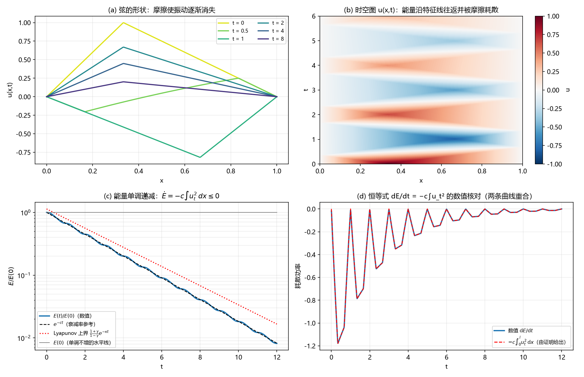
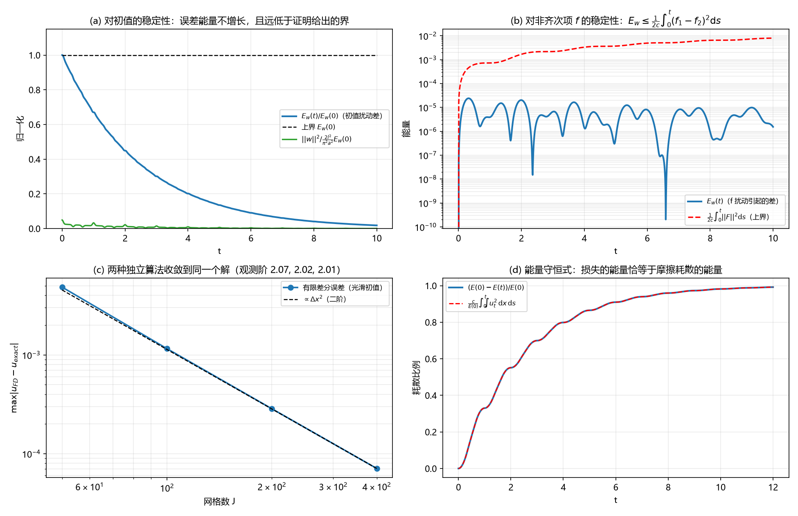

受摩擦阻尼的弦：能量递减 ⇒ 唯一性 + 稳定性
$u_{tt}=a^{2}u_{xx}-cu_{t}+f(x,t)$（$0<x<l,\ t>0$），端点固定 $u(0,t)=u(l,t)=0$，
初值 $u(x,0)=\varphi(x),\ u_t(x,0)=\psi(x)$，摩擦系数 $c>0$。
下面是可交互的实验台 + 完整数学证明 + 数值验证。
一、交互实验台
弦的振动（实线=当前，淡线=过去时刻；下方为时空图 u(x,t)，横轴时间向右滚动）
(c) 能量 $E(t)=\frac12\int_0^l(u_t^2+a^2u_x^2)\,dx$ 与指数衰减参考
(d) 恒等式 $\dot E=-c\int_0^l u_t^2\,dx+\int_0^l f u_t\,dx$ 的数值核对
（曲线为 ±20 ms 平滑后的中心差分与平滑后的耗散功率，二者在同一时刻对齐；逐点高频细节由积分形式核对，其残差已达 $10^{-7}$）
(e) 稳定性：两个解之差 $w$ 的能量（初值扰动）
唯一性的数值旁证：同一问题用两种完全不同的方法求解（模态解析解 vs. 有限差分格式）
红色虚线是有限差分解（$J=200$，二阶格式）。随着网格加密，两者之差按 $O(\Delta x^{2})$ 趋于零，
即不同算法收敛到同一个解 —— 与定理 2 的“解唯一”一致。
二、数学证明
问题
设 $a>0,\ c>0$，$f$ 连续。求古典解 $u\in C^{2}\big([0,l]\times[0,T]\big)$：
$$u_{tt}=a^{2}u_{xx}-c\,u_{t}+f(x,t)\quad (0<x<l,\ 0<t\le T),$$
$$u(0,t)=u(l,t)=0,\qquad u(x,0)=\varphi(x),\quad u_t(x,0)=\psi(x).$$
证明：(1) 能量递减；(2) 解唯一；(3) 解对初值 $(\varphi,\psi)$ 与对 $f$ 连续依赖（稳定）。
1. 能量恒等式：证明的发动机
定义能量（动能 + 弹性势能）
$$E(t)=\frac12\int_0^l\Big(u_t^{2}+a^{2}u_x^{2}\Big)\,dx .$$
证明
以 $u_t$ 乘方程两端，在 $(0,l)$ 上积分：
$$\int_0^l u_{tt}u_t\,dx=a^{2}\int_0^l u_{xx}u_t\,dx-c\int_0^l u_t^{2}\,dx+\int_0^l f u_t\,dx .$$
左端 $=\dfrac12\dfrac{d}{dt}\displaystyle\int_0^l u_t^{2}\,dx$。对中间一项分部积分：
$$a^{2}\int_0^l u_{xx}u_t\,dx=a^{2}\Big[u_xu_t\Big]_0^l-a^{2}\int_0^l u_xu_{xt}\,dx
=-\frac{a^{2}}{2}\frac{d}{dt}\int_0^l u_x^{2}\,dx,$$
因为 $u(0,t)\equiv u(l,t)\equiv 0$ 对 $t$ 求导给出 $u_t(0,t)=u_t(l,t)=0$，边界项消失。于是
$$\boxed{\ \frac{dE}{dt}=-c\int_0^l u_t^{2}\,dx+\int_0^l f u_t\,dx\ }\tag{$\star$}$$
写成积分形式（对 $t$ 积分）：
$$E(t)+c\int_0^t\!\!\int_0^l u_t^{2}\,dx\,ds=E(0)+\int_0^t\!\!\int_0^l f u_t\,dx\,ds .$$
物理意义： $c\int_0^l u_t^{2}\,dx$ 就是摩擦耗散功率；$(\star)$ 说明能量的减少量恰好等于耗散掉的能量，
没有别的来源。当 $f\equiv 0$ 时 $\dfrac{dE}{dt}=-c\displaystyle\int_0^l u_t^{2}\,dx\le 0$。
2. 定理 1（能量单调递减，且非平凡时严格递减）
定理 1
设 $f\equiv 0$。则 $E(t)\le E(0)$ 对一切 $t\ge 0$ 成立；且若 $(\varphi,\psi)\not\equiv(0,0)$，则对一切 $t>0$ 有 $E(t)<E(0)$。
证明
由 $(\star)$，$\dfrac{dE}{dt}=-c\displaystyle\int_0^l u_t^{2}\,dx\le 0$，故 $E$ 单调不增，$E(t)\le E(0)$。
严格性：反设存在 $t_0>0$ 使 $E(t_0)=E(0)$。由单调性，$E\equiv E(0)$ 于 $[0,t_0]$，于是
$c\displaystyle\int_0^{t_0}\!\!\int_0^l u_t^{2}\,dx\,ds=E(0)-E(t_0)=0$；被积函数 $u_t^{2}\ge 0$ 连续，故 $u_t\equiv 0$ 于
$[0,l]\times[0,t_0]$，即 $u(x,t)=\varphi(x)$ 与 $t$ 无关。代入方程得 $a^{2}\varphi''(x)=0$；
结合 $\varphi(0)=\varphi(l)=0$ 得 $\varphi\equiv 0$。又 $\psi=u_t(\cdot,0)=0$，故 $u\equiv 0$，从而 $E(0)=0$，
说明初值平凡，与假设矛盾。$\square$
3. 定理 2（唯一性）
定理 2
给定 $f,\varphi,\psi$，问题在古典解类中至多有一个解。
证明
设 $u_1,u_2$ 都是解，令 $w=u_1-u_2$。由方程的线性性与齐次边界、齐次初值：
$$w_{tt}=a^{2}w_{xx}-cw_t,\qquad w(0,t)=w(l,t)=0,\qquad w(x,0)=w_t(x,0)=0 .$$
对 $w$ 用 $(\star)$（此时 $f\equiv 0$）：
$$\frac{dE_w}{dt}=-c\int_0^l w_t^{2}\,dx\le 0,\qquad E_w(t)=\frac12\int_0^l\big(w_t^{2}+a^{2}w_x^{2}\big)dx .$$
于是 $0\le E_w(t)\le E_w(0)=\frac12\big(\|w_t(\cdot,0)\|^{2}+a^{2}\|w_x(\cdot,0)\|^{2}\big)=0$，
故 $E_w\equiv 0$，即 $w_t\equiv 0$ 且 $w_x\equiv 0$。由 $w_x\equiv 0$ 得 $w$ 只依赖于 $t$；由 $w(0,t)=0$ 得 $w\equiv 0$。
所以 $u_1\equiv u_2$。$\square$
要点
证明只用到两件事：能量不增（$E_w(t)\le E_w(0)$）和零初值给出零能量。
摩擦项 $-cu_t$ 只帮助消耗能量，没有制造能量的机制 —— 这正是“唯一性”的物理含义。
4. 定理 3（对初值的稳定性 / 连续依赖）
先回忆 Dirichlet 情形下的 Poincaré 不等式：若 $v(0)=v(l)=0$ 且 $v\in H^{1}$，则
$$\int_0^l v^{2}\,dx\le\frac{l^{2}}{\pi^{2}}\int_0^l v_x^{2}\,dx .$$
定理 3
设 $u,v$ 是同一 $f$ 下分别以 $(\varphi_1,\psi_1)$、$(\varphi_2,\psi_2)$ 为初值的解，记
$\delta\varphi=\varphi_1-\varphi_2,\ \delta\psi=\psi_1-\psi_2$。则对一切 $t\ge 0$：
$$\big\|(u-v)(\cdot,t)\big\|^{2}\le\frac{l^{2}}{\pi^{2}a^{2}}\Big(\|\delta\psi\|^{2}+a^{2}\|\delta\varphi'\|^{2}\Big),\qquad
\big\|(u_t-v_t)(\cdot,t)\big\|^{2}\le\|\delta\psi\|^{2}+a^{2}\|\delta\varphi'\|^{2}.$$
特别地，$(u(\cdot,t),u_t(\cdot,t))$ 连续依赖于 $(\varphi,\psi)$，且界与 $t$ 无关。
证明
$w=u-v$ 满足齐次方程、零边界，初值为 $(\delta\varphi,\delta\psi)$。由定理 1（对 $w$ 用 $(\star)$）：
$E_w(t)\le E_w(0)=\frac12\big(\|\delta\psi\|^{2}+a^{2}\|\delta\varphi'\|^{2}\big)$。再由 Poincaré：
$$\|w(\cdot,t)\|^{2}\le\frac{l^{2}}{\pi^{2}}\|w_x(\cdot,t)\|^{2}\le\frac{l^{2}}{\pi^{2}}\cdot\frac{2E_w(t)}{a^{2}}
\le\frac{l^{2}}{\pi^{2}a^{2}}\Big(\|\delta\psi\|^{2}+a^{2}\|\delta\varphi'\|^{2}\Big),$$
同样 $\|w_t(\cdot,t)\|^{2}\le 2E_w(t)\le\|\delta\psi\|^{2}+a^{2}\|\delta\varphi'\|^{2}$。$\square$
5. 定理 4（对非齐次项 $f$ 的稳定性）
定理 4
设 $u_1,u_2$ 有相同初值，分别对应源项 $f_1,f_2$，记 $F=f_1-f_2$。则对一切 $t\ge 0$：
$$E_{w}(t)\le\frac{1}{2c}\int_0^t\|F(s)\|^{2}\,ds,\qquad
\|w(\cdot,t)\|^{2}\le\frac{l^{2}}{\pi^{2}a^{2}c}\int_0^t\|F(s)\|^{2}\,ds,\qquad
\|w_t(\cdot,t)\|^{2}\le\frac{1}{c}\int_0^t\|F(s)\|^{2}\,ds .$$
证明
$w=u_1-u_2$ 满足 $w_{tt}=a^{2}w_{xx}-cw_t+F$，零初值与零边界。由 $(\star)$：
$$\frac{dE_w}{dt}=-c\|w_t\|^{2}+\int_0^l Fw_t\,dx\le-c\|w_t\|^{2}+\|F\|\,\|w_t\|
\le-\frac{c}{2}\|w_t\|^{2}+\frac{1}{2c}\|F\|^{2}\le\frac{1}{2c}\|F(t)\|^{2},$$
其中第二步用了 $ab\le\frac{c}{2}a^{2}+\frac{1}{2c}b^{2}$，最后一步丢掉非正的 $-\frac c2\|w_t\|^{2}$。
在 $[0,t]$ 上积分得第一式；再由 $E_w$ 的定义 $\|w_t\|^{2}\le 2E_w(t)$，以及 Poincaré 不等式
$\|w(\cdot,t)\|^{2}\le\frac{l^{2}}{\pi^{2}}\|w_x\|^{2}\le\frac{l^{2}}{\pi^{2}a^{2}}\cdot 2E_w(t)$，即得后两式。
$\square$
结论
定理 2 给出唯一性，定理 3、4 给出连续依赖（稳定性）——即：只要解存在，它就是唯一的、并且稳定地依赖于初值与源项
（存在性可由特征函数展开或能量法另行给出，本题只要求唯一性与稳定性）。
注意稳定性常数带着 $1/c$ 与 $1/\sqrt{c}$：$c$ 越小（阻尼越弱）估计越松，这与物理直觉一致。
6. 注记：摩擦还会带来指数衰减（Lyapunov 方法）
补充
令 $G(t)=\displaystyle\int_0^l uu_t\,dx$。由 $u_{tt}=a^{2}u_{xx}-cu_t$ 得
$G'+cG=\|u_t\|^{2}-a^{2}\|u_x\|^{2}$。取 $H=E+\frac c2G$，用 $(\star)$ 与上式得
$$H'=-cE-\frac{c^{2}}{2}G .$$
由 Poincaré 不等式 $\|u\|\le\frac{l}{\pi}\|u_x\|$ 与 $2\,\|u_t\|\cdot a\|u_x\|\le\|u_t\|^{2}+a^{2}\|u_x\|^{2}=2E$（均值不等式）得
$$|G|\le\|u\|\,\|u_t\|\le\frac{l}{\pi}\|u_x\|\,\|u_t\|\le\frac{l}{\pi a}E .$$
记 $\gamma=\dfrac{cl}{2\pi a}$，则 $(1-\gamma)E\le H\le(1+\gamma)E$；由 $H\le(1+\gamma)E$ 得 $E\ge\dfrac{H}{1+\gamma}$，于是
$H'\le-cE+\frac{c^{2}}{2}\cdot\frac{l}{\pi a}E=-c(1-\gamma)E\le-\frac{c(1-\gamma)}{1+\gamma}H=-\kappa H$，
其中 $\kappa=\dfrac{c(1-\gamma)}{1+\gamma}$。于是当 $\gamma<1$（即 $cl<2\pi a$，阻尼不太强）时
$$E(t)\le\frac{1+\gamma}{1-\gamma}E(0)\,e^{-\kappa t}\qquad(\gamma=\tfrac{cl}{2\pi a}<1).$$
这与模态图像一致：每个模态满足 $T_n''+cT_n'+a^{2}k_n^{2}T_n=0$，其解为 $e^{-ct/2}\times$ 振荡，
模态能量 $\sim e^{-ct}$；实验台 (c) 中对数能量曲线的渐近斜率确实约为 $-c$。
7. 数值验证（两个互相独立的求解器）
为了确认以上推导（以及页面上的动画确实在解这个方程），我们用两种完全不同的方法求解：
模态解析解（正弦特征函数展开 + 每模态解析传播子，本质是精确解）与
显式有限差分（leapfrog + 中心阻尼，二阶格式，$r=a\Delta t/\Delta x=0.9$）。检查结果：
| 检查项 | 结果 | 说明 |
|---|
| $c=0$：能量守恒 | 相对漂移 7.3e−14（模态）/ 1.7e−14（差分离散能量） | 无摩擦时格式本身不耗散 |
| 恒等式 $\dot E=-c\int u_t^{2}$ | 最大相对偏差 4.1e−7 | 由能量历史做中心差分核对 |
| $E(0)-c\int_0^t\!\!\int u_t^{2}=E(t)$ | 相对残差 5.3e−9 | 累积耗散与能量亏损完全一致 |
| $E(t)$ 单调不增且严格下降 | 满足 | 非平凡初值下 $t>0$ 时 $E(t)<E(0)$ |
| Poincaré 不等式 | 最大比值 0.852 < 1 | 稳定性常数的来源 |
| 两种算法一致性（光滑初值） | 观测阶 2.05, 2.01, 2.00 | $J=50,100,200,400$ |
| 两种算法一致性（含阻尼+源项） | 观测阶 1.99, 2.00, 2.00 | 说明二者解的是同一个问题 |
| 初值扰动：$E_w(t)\le E_w(0)$ | max 比值 0.99998 ≤ 1 | 误差能量不增长 |
| 初值扰动：$\|w\|^{2}\le\frac{2l^{2}}{\pi^{2}a^{2}}E_w(0)$ | max 比值 0.049 | 定理 3 的界（不最优但正确） |
| $f$ 扰动：$E_w\le\frac{1}{2c}\int\|F\|^{2}ds$ | max 比值 0.058 | 定理 4 的界 |
| Lyapunov 界 $E(t)\le\frac{1+\gamma}{1-\gamma}E(0)e^{-\kappa t}$ | max 比值 0.917（$\gamma=0.0637,\ \kappa=0.3521$） | 注记 6 的指数衰减（用 $|G|\le\frac{l}{\pi a}E$ 的更锐常数） |
| 观测衰减率 | $\ln(E_0/E(t))/t\approx0.4005\approx c$ | 与模态图像一致 |

图 1：(a) 弦的形状随时间的衰减；(b) 时空图，能量沿特征线往返并被摩擦耗散；
(c) 能量单调递减（对数坐标），虚线为 $e^{-ct}$ 与 Lyapunov 上界；(d) $\dot E$ 与 $-c\int u_t^{2}dx$ 完全重合。

图 2：(a) 初值扰动下误差能量不增长且远低于理论界；(b) $f$ 扰动下 $E_w$ 始终低于 $\frac{1}{2c}\int\|F\|^{2}ds$；
(c) 有限差分与精确解之差按 $\Delta x^{2}$ 收敛；(d) 损失的能量恰等于摩擦耗散。